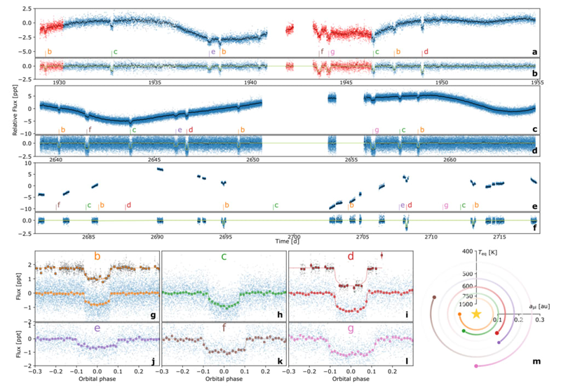

# Exoplanetary science = Data science <div class="fragment" markdown="1"> The vast majority of exoplanetary science is, in fact, **data science**. </div> <div class="fragment" markdown="1"> - API/SQL database access </div> <div class="fragment" markdown="1"> - Regression & classification </div> <div class="fragment" markdown="1"> - Model building, optimising, sampling. </div> <div class="fragment" markdown="1"> - Data visualisation </div> -v- ## Most problems in observational astronomy can be thought of in the following way: <div class="fragment" markdown="1"> 1) Imagine a **hypothesis** (transit, supernova, etc) </div> <div class="fragment" markdown="1"> 2) Create a **parameterised model** translating physics into observables </div> <div class="fragment" markdown="1"> 3) Take **observations** (+ "reduce" them, e.g. remove systematic noise) </div> <div class="fragment" markdown="1"> 4) **Fit** the model to the observations </div> <div class="fragment" markdown="1"> 5) **Sample** the parameters to derive uncertainties </div> <div class="fragment" markdown="1"> 6) Use **model comparison** to test whether the hypothesis is justified </div> --- # Introducing myself I try to find _transiting exoplanets_ using data from space telescopes (e.g. TESS), and then I confirm & characterise them using ground-based telescopes. Most interesting recent example, **HD110067**, a resonant chain of 6 planets which I discovered -v- <p></p> --- ## Introducing you! ##### Tell us: - Name - Rough experience level at coding - What's your favourite planet (and why)? --- # We learn by _doing_. <div class="fragment" markdown="1"> - I will usually provide one bare-bones examples which require _thinking_ to complete a simplified version. </div> <div class="fragment" markdown="1"> - With this knowledge in hand, we can see how existing astronomical software runs and apply to some real data </div> <div class="fragment" markdown="1"> - There will be multiple examples provided </div> -v- # We learn by _showing_ <div class="fragment" markdown="1"> - For each topic, each of you will create a short (<10 minute, ~5 slide) presentation each of which will be worth ~7.5% of the total credit </div> <div class="fragment" markdown="1"> - There will also be a presentation of the final project. </div> --- # 2-week structure: - *Monday 16:00*: presenting previous week's project <div class="fragment" markdown="1"> - *Monday 17:00*: Introduction to new subject (slides) </div> <div class="fragment" markdown="1"> - *Tuesday 09:00*: Introduction to simple code (python) </div> <div class="fragment" markdown="1"> - _1 week take-home playing with code/data/etc._ </div> <div class="fragment" markdown="1"> - *Monday 16:00-18:00*: Advanced coding sessions (python) </div> <div class="fragment" markdown="1"> - *Tuesday 09:00*: Open door policy for specific questions </div> <div class="fragment" markdown="1"> - _1 week take-home finalising analysis & presentation._ </div> -v- # Assessment: <div class="fragment" markdown="1"> - 0.5% for attendance at each session (total: 10%) </div> <div class="fragment" markdown="1"> - 45% from small projects (7.5% each) </div> <div class="fragment" markdown="1"> - 35% from a focussed final project (20% report, 15% presentation) </div> -v- ## LLM/AI ethics - Generative AI is the most useful coding support <div class="fragment" markdown="1"> - Use it for technical support (_Why is my code crashing?_) </div> <div class="fragment" markdown="1"> - Do not use it to **replace understanding** (_Build me an interior structure EoS_) </div> <div class="fragment" markdown="1"> - You will have to demonstrate understanding in presentation questions. </div> -v- ## Peer support - Is welcome. Please help out others! <div class="fragment" markdown="1"> - But project/presentations should be **individudal** </div> --- # Topics <div class="fragment" markdown="1"> wk 1) Intro (installation, stats/coding refresher) </div> <div class="fragment" markdown="1"> 2+3) Stars (Gaia) </div> <div class="fragment" markdown="1"> 4+5) Transiting Planets </div> <div class="fragment" markdown="1"> 6+7) Radial Velocities </div> <div class="fragment" markdown="1"> 8+9) Interior structures </div> <div class="fragment" markdown="1"> 10+11) Exoplanetary Imaging </div> <div class="fragment" markdown="1"> 12+13) JWST atmospheric spectroscopy </div> -v- ### Links to other researchers <div class="fragment" markdown="1"> - CHEOPS instrument team (transit photometry) </div> <div class="fragment" markdown="1"> - Yann Alibert & Christoph Mordasini - Interior structure modelling </div> <div class="fragment" markdown="1"> - Jonas Kuhn - Imaging & instrumentation (e.g. PLACID) </div> <div class="fragment" markdown="1"> - Brice Demory & Daniel Kitzmann - atmospheric spectroscopy </div> <div class="fragment" markdown="1"> For masters projects, hopefully these projects from a useful intro! </div> -v- # Final project Take a deep-dive into astronomical data, and write-up a ~10 page report (due late January 2027). <div class="fragment" markdown="1"> Can go into deeper detail into any of the topics covered, or combine some of them (e.g. transits+ RVs + interior modelling). </div> --- # Questions? Feel free to reach out: - via email (`hugh.osborn@unibe.ch`) - at my office (G6 EG.018).